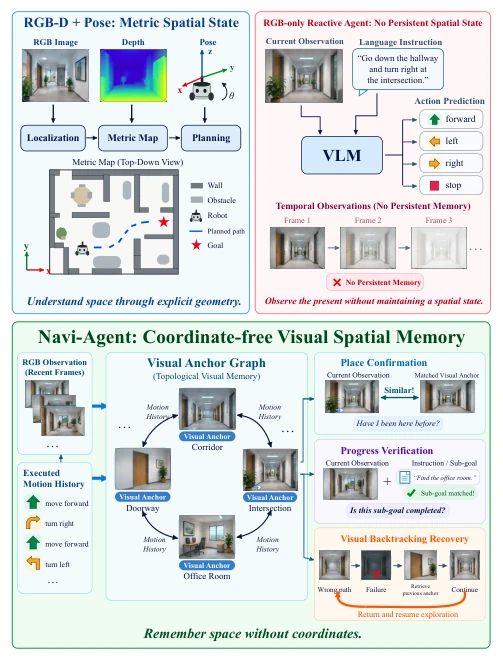
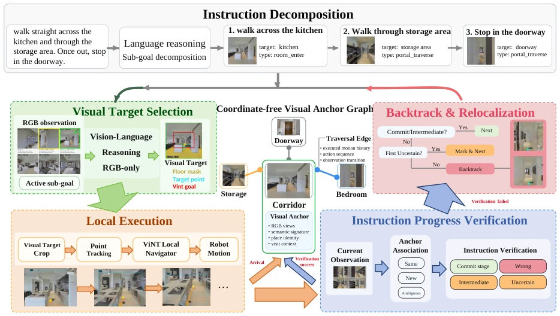
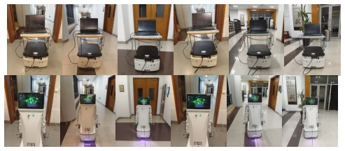
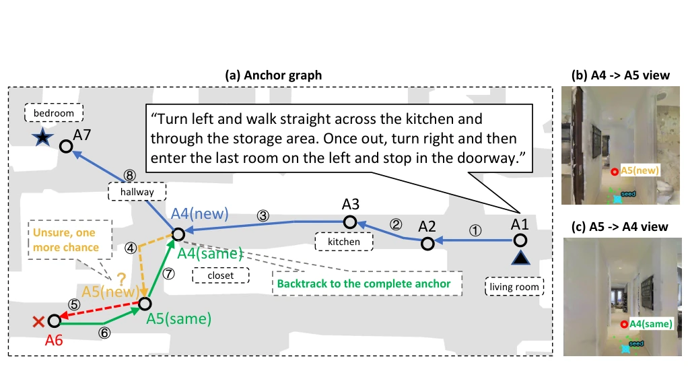
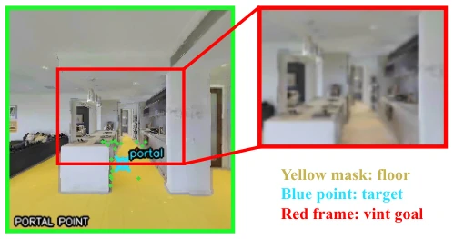

This paper attempts to perform embodied navigation in a "naked" (without depth, without pose) state, which sounds like looking at flowers through fog. The core of Navi-Agent is replacing traditional geometric maps with "visual anchor maps", piecing together spatial awareness using RGB observations and motion history. The highlight lies in completely breaking away from reliance on SLAM or depth maps, relying purely on visual memory and backtracking, which is valuable in resource-constrained or sensor failure scenarios. However, "coordinate-free" means it might not distinguish similar scenes, such as two identical-looking corridors, causing the Associate module to enter an Ambiguous state. Experimental results are SOTA among geometric constraint methods, but there is still a gap compared to those using depth maps. Additionally, latency analysis shows VLM inference takes up the majority, making real-time performance a challenge. Overall, it is an interesting attempt at "visual memory", but still far from true robust navigation, especially regarding generalization ability in complex scenarios.
Existing zero-shot VLN-CE systems mostly rely on geometric localization (such as BEV maps, 3D scene graphs) to maintain spatial state [9-11]. Although DreamNav and LightZeroNav attempt to remove depth and global coordinates [15, 16], they struggle to maintain persistent spatial awareness, unable to reliably confirm locations, verify progress, or recover from errors. This paper points out the core problem: how to maintain persistent spatial state relying solely on visual observations without explicit geometric localization, and achieve backtracking? This solves navigation difficulties when sensors are limited (e.g., RGB only) or SLAM fails, enhancing cross-platform generalization ability. Existing methods often lack the ability to organize historical observations under geometric constraints, leading to an inability to effectively distinguish old and new locations; this paper aims to fill this gap.

Fig. 1. Navi-Agent overview. The proposed agent builds a coordinate-free Visual Anchor Graph to maintain visual spatial memory for long-horizon navigation.
The overall process decomposes long instructions into sub-goals and executes them through closed-loop navigation. 1. Instruction Decomposition: LLM converts instructions into an ordered sequence of sub-goals. 2. Visual Target Selection: VLM ranks 6 views, selects the best direction, and generates trackable points. 3. Local Execution: ViNT [28] combines with KLT trackable points, until points move out of the bottom of the frame indicating arrival. 4. Anchor Construction: At stop, record 6-view RGB and semantic signatures, constructing a coordinate-free anchor map (nodes are scenes, edges are motion history). 5. Progress Verification: Judge whether current observation is Same/New/Ambiguous through Associate, VerifyProgress decides whether to advance sub-goals. 6. Backtracking Recovery: If failed, use historical anchors and visual matching to backtrack to the parent node and re-explore. The innovation lies in replacing geometric topology with visual topology to achieve coordinate-free spatial memory.

Fig. 2. Navi-Agent system overview. A long-horizon instruction is first decomposed into ordered typed sub-goals (Decompose). For each active sub-goal, SelectTarget ranks six RGB views with a VLM and grounds the selected visual target (floor mask, trackable point, and ViNT goal crop); ExecuteLocal then performs navigation via point tracking and ViNT. Each physical stop is registered into a coordinate-free visual anchor graph, where nodes store RGB views, semantic signatures, place identities, and visit contexts, and edges record executed motion. Associate identifies each new visit as Same/New/Ambiguous, while VerifyProgress determines stage transition as Commit/Intermediate/Wrong/Uncertain. Upon verification failure, the agent explores alternatives or backtracks through recorded edges to re

Fig. 7. Real-world deployment of Navi-Agent across different platforms and tasks. The top row (1–6) shows execution traces on the AGV platform, while the bottom row (7–12) illustrates those on the wheeled-legged robot. Specifically, columns 1–3 and 7–9 depict Task 1, whereas columns 4–6 and 10–12 demonstrate Task 2.
Tested on R2R-CE (OpenNav R2R-CE 100), compared with MapGPT, DreamNav, etc. Navi-Agent achieved SR of 33.4% in geometric constraint methods, better than LightZeroNav (27.0%), close to some depth-dependent methods. Ablation shows, removing backtracking mechanism SR drops to 28.33%, 1-hop backtracking is optimal. Physical backtrack error 2.32m, success rate 80.3%. Real-world deployment on AGV and wheel-legged robots, without depth/IMU, task success rate 0.7-0.8, validating cross-platform generalization. Latency analysis shows VLM inference takes the longest time (8.3s).
其他图片Other Figures

Fig. 5. Coordinate-free anchor graph and visual backtracking. (a) Anchors A1–A7 are created by BuildVisit from six-view RGB visits and linked by executed TraversalEdges (solid blue, numbered in execution order); room labels are the semantic signatures used by Associate. At A5 the branch is judged uncertain (orange) and then fails (red). (b) The stored departure view of edge A4 →A5. (c) The view after Backtrack returns along the same edge; Associate classifies the returned visit as SAME to A4 (green), which commits the reverse edge and restores exploration from A4. The top-down map is for visualisation only and is never available to the policy.

Fig. 6. Goal construction for ExecuteLocal. Left: the selected view v with the floor mask (yellow) and the tracked target point p (blue). Right: the goal crop around p (red frame) that is fed to the ViNT local navigator; the tracker updates p every frame and the crop follows it until p exits through the bottom of the image.